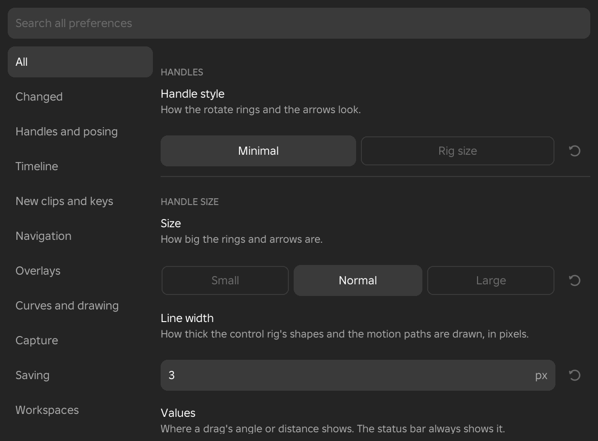

Preferences
The Preferences window holds every setting that you set once and keep. They cover how the handles look, how the timeline and viewport behave, what new animations start with, which overlays show, and how Framez saves your work. Settings that change while you pose, such as IK and joint limits, live on the Posing page of the Inspector instead.
The Preferences Window
- Menu
- Edit ‣ Settings ‣ Preferences...
The Framez Preferences window opens as a floating window. A search box runs across the top, and down the left is a list of categories that begins with All. Choosing All lists every setting in category order, and choosing any other category shows only its settings. The settings are on the right. Each has its name, a line saying what it does, its control, and its own reset button, which returns that one setting to its default.
A setting you have changed from its default has a red line beside it, and its reset button is lit. Choosing Changed under All lists only those settings.
Typing in the search box looks through the setting names, their descriptions and their choices, and lists the matching settings from every category. Changes apply at once and are kept between sessions. They belong to your copy of Framez, so they are the same in every place. Number boxes accept sums such as 2*pi or 90/4.

Handles and Posing
These settings change the rings and arrows you drag to pose a limb, and whether letting go of a handle keys the pose.
Handle Style
- Menu
- Edit ‣ Settings ‣ Preferences... ‣ Handles and posing
Handle style sets how the rotate rings and the move arrows look and how they are sized. The default is Minimal.
Options
- Minimal
- The transform gizmo as Blender draws it, the same size on the screen at any distance. Rotate shows the half of each ring that faces the camera, a white ring that turns the limb about the view direction, and a faint trackball inside the rings: drag there to rotate the limb freely. Move shows one arrow for each axis on the positive side, a square for each pair of axes that moves the limb in that plane, and a white circle that moves it across the screen. The handle under the pointer is drawn at full strength and the others dimmed. While you rotate, a grey slice shows the angle from where you pressed; while you move, a grey copy of the handle stays where you started.
- Rig size
- The rings have balls on them and the arrows point both ways. They are sized to the rig, so they grow and shrink as the camera moves closer or further away.
Example
For example, choose Minimal to keep the handles easy to grab when you zoom far out on a long scene, and Rig size when you want handles that stay in proportion to the character.
Handle Size
- Menu
- Edit ‣ Settings ‣ Preferences... ‣ Handles and posing
The Size setting changes how big the rings and arrows are. With the Minimal handle style the handles keep that size on the screen at any distance. The default is Normal.
Options
- Small, Normal, Large
- Small draws the handles at three quarters of the normal size, and Large at one and four tenths of it.
Line Width
- Menu
- Edit ‣ Settings ‣ Preferences... ‣ Handles and posing
Line width sets how thick the control rig's shapes and the motion paths are drawn, in pixels, from 1 to 6. The lines keep that width at any distance. The default is 3.
Values
- Menu
- Edit ‣ Settings ‣ Preferences... ‣ Handles and posing
Values sets where the angle or distance of a drag shows. The status bar shows it with either option. The default is Status bar.
Options
- Status bar
- The value shows in the status bar under the timeline only.
- At cursor
- The value also shows in a label beside the pointer while you drag.
Rotate with R, Move with G
- Menu
- Edit ‣ Settings ‣ Preferences... ‣ Handles and posing
- Shortcut
- R, G
With a limb selected, R rotates it and G moves it with the pointer at once, without grabbing a handle. The handles hide while the transform runs. The default is On; with Off, R switches between Rotate and Move.
While it runs
- X, Y, Z
- Keep to that axis of the limb, drawn as a line in the axis colour. Press it again for the world's axis, and a third time to free it.
- Numbers
- Type the amount, in degrees or studs. - changes the sign and Backspace removes the last digit.
- Shift, Ctrl
- Slower, or in steps (Precision and Snapping).
- Click, Enter
- Keep the result. It is keyed as a handle drag is.
- Right-click, Esc
- Cancel and put the limb back.
Drag a Part to Rotate It
- Menu
- Edit ‣ Settings ‣ Preferences... ‣ Handles and posing
When this is on, dragging an arm, a leg or the head in the viewport rotates it about its joint so the point you pressed follows the pointer. On a leg or arm in IK the hand or foot follows the pointer instead. A click without dragging selects the part. The default is On.
Precision and Snapping
- Menu
- Edit ‣ Settings ‣ Preferences... ‣ Handles and posing
Precision and snapping sets how holding a modifier key changes a handle drag. Three boxes sit side by side. They can be typed into or dragged, and one reset button returns all three to their defaults.
Options
- Shift (x)
- The speed of a drag while Shift is held, as a fraction of the normal speed, from 0.01 to 1. The default is 0.2, so the handle moves a fifth as far as the pointer.
- Ctrl turn (deg)
- The step that a ring snaps to while Ctrl is held, from 0.01° to 90°. The default is 5°.
- Ctrl move (studs)
- The step that an arrow snaps to while Ctrl is held, from 0.001 to 10 studs. The default is 0.1 studs.
Example
For example, set the turn step to 15° to place a head turn on exact angles, then hold Ctrl while dragging the ring.
Auto Key
- Menu
- Edit ‣ Settings ‣ Preferences... ‣ Handles and posing
Auto key decides whether a pose made with the handles is keyed when you let go. The default is On.
Options
- On
- Letting go of a handle keys the limb at the playhead.
- Off
- The pose is applied to the rig but not keyed, and the status line says to press K to key it.
Example
For example, turn Auto key off to try a pose with the handles without disturbing the animation, and press K only when you like it.
Timeline
These settings change how the mouse wheel and the stepping commands move along the timeline.
Wheel Zoom
- Menu
- Edit ‣ Settings ‣ Preferences... ‣ Timeline
Wheel zoom sets how much one notch of the mouse wheel zooms the timeline, as a factor from 1.05 to 3. The default is 1.25, so each notch zooms the timeline by that factor.
Frame Step
- Menu
- Edit ‣ Settings ‣ Preferences... ‣ Timeline
Frame step sets how many frames the Previous frame and Next frame commands move, from 1 to 100. The default is 1. Their keys are Alt+Left and Alt+Right.
Example
For example, set Frame step to 5 to scrub through a long idle in larger steps.
Key Jump
- Menu
- Edit ‣ Settings ‣ Preferences... ‣ Timeline
Key jump sets how many keys the Previous key and Next key commands move, from 1 to 20. The default is 1. Their keys are Left and Right.
New Clips and Keys
These settings decide how a new key behaves and what a new animation starts with.
How a New Key Plays into the Next
- Menu
- Edit ‣ Settings ‣ Preferences... ‣ New clips and keys
This setting chooses the easing that a newly made key gets, which decides how the motion travels from that key to the next one. It does not change keys that already exist. The default is Smooth.
Options
- Linear
- Keeps the timing of your poses. The limb moves at a steady speed from one key to the next.
- Smooth
- Eases through each key. The motion rounds off at every key and stays flat at a peak, so it never passes the pose.
- As the key before
- Copies the easing of the key before the new one.
Example
For example, choose Smooth when you pose organic motion such as an idle or a wave, where every pose should flow into the next, and keep Linear for snappy combat poses that you refine with Easing.
New Animation Frame Rate
- Menu
- Edit ‣ Settings ‣ Preferences... ‣ New clips and keys
The Frame rate under New animations sets the frames per second of every animation started with New Animation, from 1 to 240. The default is 60. The frame rate of an animation that already exists is changed on the Clip page of the Inspector.
New Animation Length
- Menu
- Edit ‣ Settings ‣ Preferences... ‣ New clips and keys
The Length under New animations sets how long the timeline of a new animation is, from 0.1 to 600 seconds. The default is 1 second.
Example
For example, if most of your animations are 2 second attacks at 30 fps, set Frame rate to 30 and Length to 2 so each new animation starts that size.
Navigation
Navigation changes how the middle mouse button, the wheel and the number pad move the view in the viewport.
Viewport
- Menu
- Edit ‣ Settings ‣ Preferences... ‣ Navigation
The Viewport setting chooses how the middle mouse button and the wheel move the view. The default is Studio. The same switch is the Blender navigation row of the View menu.
Options
- Studio
- Studio's own navigation is left untouched.
- Blender
- Dragging with the middle mouse button orbits the view about a pivot. Holding Shift pans, and holding Ctrl zooms. The wheel zooms toward the pivot, Ctrl with the wheel pans across, and Shift with the wheel pans up and down. On the number pad, Num 4, Num 6, Num 8 and Num 2 orbit by 15°, Num + and Num - zoom, and Num . frames the selected limb. The pivot is the selected limb's joint, or the middle of what was last framed.
See Also
Blender Navigation describes the same switch in the View menu.
Orbit Speed
- Menu
- Edit ‣ Settings ‣ Preferences... ‣ Navigation
Orbit speed sets how far a drag with the middle mouse button turns the view, as a percentage from 10 to 400. The default is 100. It applies when Viewport is set to Blender.
Pan Speed
- Menu
- Edit ‣ Settings ‣ Preferences... ‣ Navigation
Pan speed sets how far Shift with a middle drag, Ctrl with the wheel and Shift with the wheel slide the view, as a percentage from 10 to 400. The default is 100. It applies when Viewport is set to Blender.
Zoom Toward the Cursor
- Menu
- Edit ‣ Settings ‣ Preferences... ‣ Navigation
Zoom toward the cursor decides which point the wheel closes in on. With Off, the default, the wheel zooms toward the pivot. With On, it closes in on the point under the mouse pointer instead. It applies when Viewport is set to Blender.
Example
For example, turn it on to zoom in on a hand at the edge of the viewport without first moving the pivot to it.
Overlays
These settings change how motion paths, the onion skin and bones are drawn. The overlays themselves are switched on in the View menu.
Motion Path Length
- Menu
- Edit ‣ Settings ‣ Preferences... ‣ Overlays
The Length under Motion paths chooses how much of each path is drawn. The default is Whole clip.
Options
- Whole clip
- Each path covers the whole animation.
- Around current frame
- Each path covers only the frames either side of the playhead, as many as Frames each side sets.
See Also
Motion Paths describes the overlay.
Motion Path Frames Each Side
- Menu
- Edit ‣ Settings ‣ Preferences... ‣ Overlays
Frames each side sets how far a motion path reaches before and after the playhead when its length is Around current frame, from 1 to 600 frames. The default is 30.
Motion Path Frame Numbers
- Menu
- Edit ‣ Settings ‣ Preferences... ‣ Overlays
Frame numbers draws frame numbers beside the selected limb's motion path. The default is Off.
Options
- Off
- No numbers are drawn.
- Every key
- A number is drawn at each key of the path.
- Every 5 frames
- A number is drawn at every fifth frame.
Onion Skin Before Colour
- Menu
- Edit ‣ Settings ‣ Preferences... ‣ Overlays
Before colour is the tint of the onion skin ghosts that show the frames before the playhead. It is a colour of six hexadecimal digits, such as 282A30, shown next to a swatch. Anything that is not six hexadecimal digits is refused, and the status line says so. The default is 282A30.
Onion Skin After Colour
- Menu
- Edit ‣ Settings ‣ Preferences... ‣ Overlays
After colour is the tint of the ghosts that show the frames after the playhead, entered the same way as Before colour. The default is F0F0F5.
Onion Skin Ghost Strength
- Menu
- Edit ‣ Settings ‣ Preferences... ‣ Overlays
Ghost strength sets how solid the onion skin ghosts are, as a percentage from 10 to 200. The default is 100. A lower value makes the ghosts fainter, and a higher one makes them stand out against a busy scene.
See Also
Onion Skin describes the overlay.
Bone Style
- Menu
- Edit ‣ Settings ‣ Preferences... ‣ Overlays
Bone style draws each joint as a bone over the rig. The default is Off. The same choice is in the Bones overlay of the View menu.
Options
- Off
- No bones are drawn.
- Octahedral
- A diamond-shaped bone from each joint to the next joint down the chain, or to the far end of the part for a hand, a foot, the head or a weapon.
- Stick
- A thin rod with a ball at the joint.
See Also
Bones describes the overlay.
Bone X-Ray
- Menu
- Edit ‣ Settings ‣ Preferences... ‣ Overlays
X-ray decides whether bones are drawn through the body or hidden behind it. With On, the default, they show through the body. With Off, the parts of a bone that lie behind the body are hidden.
Curves and Drawing
These settings change how automatic handles are placed in the Curve editor and how strokes drawn with the Annotate pen are smoothed.
Auto Handles
- Menu
- Edit ‣ Settings ‣ Preferences... ‣ Curves and drawing
Auto handles sets how an automatic handle slopes through the keys on either side of it. It applies to every automatic and clamped key in the Curve editor. The default is Standard.
Options
- Standard
- The handle follows the straight slope from the key before to the key after.
- Even acceleration
- The handle follows the slope of the curve through the key and its two neighbours, weighted by the gaps between them, so keys that are spaced unevenly in time still speed up and slow down smoothly.
Pen Smoothing
- Menu
- Edit ‣ Settings ‣ Preferences... ‣ Curves and drawing
Pen smoothing sets how many times a stroke drawn with the Annotate pen is smoothed when you let go of it, from 0 to 8. The default is 1. With 0 the stroke stays exactly as drawn, and each extra pass rounds off small wobbles further while keeping both ends in place.
See Also
Annotate describes the pen.
Capture
The Capture category holds the setting for recording and keying out the rigs.
Green Screen Colour
- Menu
- Edit ‣ Settings ‣ Preferences... ‣ Capture
The Colour under Green screen sets the flat colour behind the rigs when the green screen is on. The default is Green.
Options
- Green, Blue
- A standard keying green or blue.
- Your own
- A colour you set in the Green screen settings of the View menu.
See Also
Green Screen describes the camera mode.
Saving
These settings control the safety copies Framez keeps of your work.
Auto-Recovery
- Menu
- Edit ‣ Settings ‣ Preferences... ‣ Saving
Auto-recovery sets how often Framez keeps a copy of unsaved work on this computer while the animation changes. A copy is made a few seconds after your last edit, and no more often than this setting allows. The default is Every 30 s.
Options
- Every 30 s, Every minute, Every 2 minutes
- The shortest time between two recovery copies.
- Off
- No recovery copies are made.
See Also
Unsaved Work and Recovery explains how to get a copy back.
Recovery Copies Kept
- Menu
- Edit ‣ Settings ‣ Preferences... ‣ Saving
The Kept setting sets how many unsaved animations are kept as recovery copies. When there are more, the oldest copy goes. The choices are 3, 5 and 10, and the default is 5.
Versions Kept
- Menu
- Edit ‣ Settings ‣ Preferences... ‣ Saving
Versions kept sets how many saved versions of each animation are kept in the place, in the FramezHistory folder of ServerStorage. The choices are 5, 10, 25 and 50, and the default is 10. When there are more versions, the oldest goes.
See Also
Version History lists the versions.
Backup Folder
- Menu
- Edit ‣ Settings ‣ Preferences... ‣ Saving
- Needs
- The Framez Helper
The Backup folder is the folder where the Framez Helper copies every Save. Each save is written there as a .json file with the keys and an .rbxm file that can be dragged back into Studio. Leave the box empty to use the helper's own folder, which is Framez backups inside your Documents folder. The reset button returns the setting to the helper's folder.
Under the name, a line says whether the last copy succeeded and where it went, or why it failed. Copies are made in the background, so a missing helper never slows a Save.
Example
For example, set the folder to a synced drive so that every saved animation is also backed up off your computer.
Workspaces
The Workspaces category decides how much of Framez each workspace shows.
Menus and Tools
- Menu
- Edit ‣ Settings ‣ Preferences... ‣ Workspaces
Menus and tools sets what each workspace shows. The default is Its own.
Options
- Its own
- Each workspace shows its own menus and tools.
- All
- Every workspace shows every menu, tool, track and Inspector section.
Example
For example, choose All when you want the Scene tools available while you work in the Animate workspace, or when a menu you remember seems to be missing.
See Also
Workspaces explains what each workspace shows.
Keyboard
The Keyboard category opens the shortcuts window.
Keyboard Shortcuts Button
- Menu
- Edit ‣ Settings ‣ Preferences... ‣ Keyboard
The Keyboard shortcuts... button opens the Keyboard Shortcuts window. Choosing the Keyboard category in the list opens the same window.